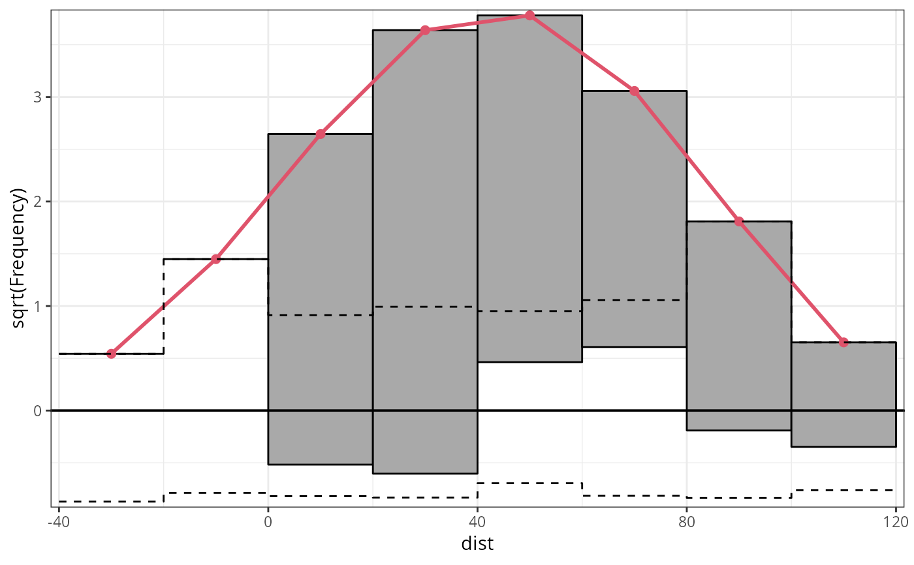
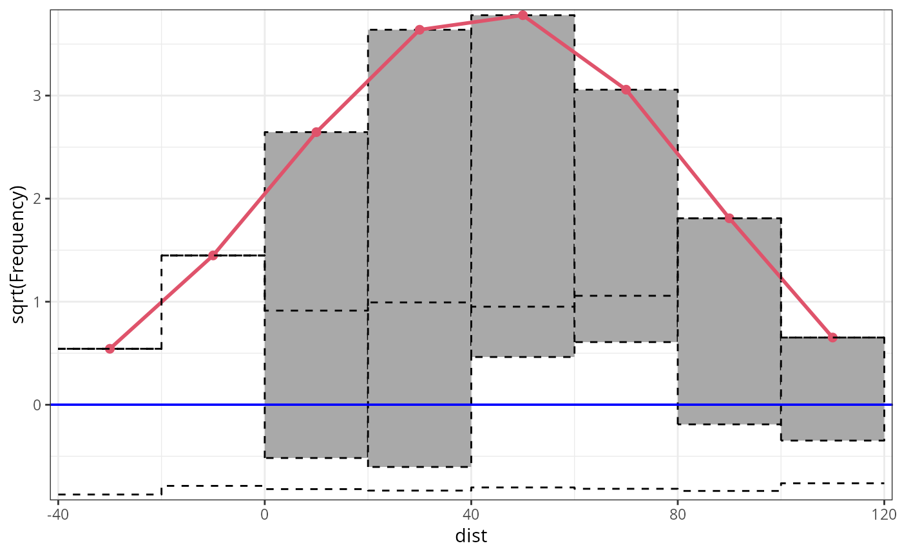

S3 Methods for Plotting Rootograms
plot.rootogram.RdGeneric plotting functions for rootograms of the class "rootogram"
computed by link{rootogram}.
# S3 method for rootogram plot( x, ref = TRUE, xlim = c(NA, NA), ylim = c(NA, NA), xlab = NULL, ylab = NULL, main = NULL, border = "black", fill = adjustcolor("black", alpha.f = 0.2), col = 2, lwd = 2, pch = 19, lty = 1, type = NULL, axes = TRUE, box = FALSE, ... ) # S3 method for rootogram autoplot( object, ref = TRUE, xlim = c(NA, NA), ylim = c(NA, NA), xlab = NULL, ylab = NULL, main = NULL, border = "black", fill = "darkgray", colour = 2, size = 1, shape = 19, linetype = 1, type = NULL, legend = FALSE, ... )
Arguments
| x, object | an object of class |
|---|---|
| ref | logical. Should a reference line be plotted? |
| xlim, ylim, border, fill, col, lwd, pch, lty, type, axes, box | graphical parameters. These may pertain either to the whole plot or just the histogram or just the fitted line. |
| xlab, ylab, main | graphical parameters. |
| ... | further graphical parameters passed to the plotting function. |
| colour, size, shape, linetype | graphical parameters passed to
|
| legend | logical. Should a legend be added in the |
Details
Rootograms graphically compare (square roots) of empirical frequencies with fitted frequencies from a probability model.
Rootograms graphically compare frequencies of empirical distributions and
fitted probability models. For the observed distribution the histogram is
drawn on a square root scale (hence the name) and superimposed with a line
for the fitted frequencies. The histogram can be "standing" on the
x-axis (as usual), or "hanging" from the fitted curve, or a
"suspended" histogram of deviations can be drawn.
References
Friendly M (2000), Visualizing Categorical Data. SAS Institute, Cary.
Kleiber C, Zeileis A (2016). “Visualizing Count Data Regressions Using Rootograms.” The American Statistician, 70(3), 296--303. c("\Sexpr[results=rd,stage=build]tools:::Rd_expr_doi(\"#1\")", "10.1080/00031305.2016.1173590")doi: 10.1080/00031305.2016.1173590 .
Tukey JW (1977). Exploratory Data Analysis. Addison-Wesley, Reading.
See also
Examples
## speed and stopping distances of cars m1_lm <- lm(dist ~ speed, data = cars) ## compute and plot rootogram rootogram(m1_lm)## add separate model if (require("crch", quietly = TRUE)) { m1_crch <- crch(dist ~ speed | speed, data = cars) points(rootogram(m1_crch, plot = FALSE), col = 2, lty = 2) }#------------------------------------------------------------------------------- if (require("crch")) { ## precipitation observations and forecasts for Innsbruck data("RainIbk", package = "crch") RainIbk <- sqrt(RainIbk) RainIbk$ensmean <- apply(RainIbk[,grep('^rainfc',names(RainIbk))], 1, mean) RainIbk$enssd <- apply(RainIbk[,grep('^rainfc',names(RainIbk))], 1, sd) RainIbk <- subset(RainIbk, enssd > 0) ## linear model w/ constant variance estimation m2_lm <- lm(rain ~ ensmean, data = RainIbk) ## logistic censored model m2_crch <- crch(rain ~ ensmean | log(enssd), data = RainIbk, left = 0, dist = "logistic") ## compute rootograms r2_lm <- rootogram(m2_lm, plot = FALSE) r2_crch <- rootogram(m2_crch, plot = FALSE) ## plot in single graph plot(c(r2_lm, r2_crch), col = c(1, 2)) }#------------------------------------------------------------------------------- ## determinants for male satellites to nesting horseshoe crabs data("CrabSatellites", package = "countreg") ## linear poisson model m3_pois <- glm(satellites ~ width + color, data = CrabSatellites, family = poisson) ## compute and plot rootogram as "ggplot2" graphic rootogram(m3_pois, plot = "ggplot2")#------------------------------------------------------------------------------- ## artificial data from negative binomial (mu = 3, theta = 2) ## and Poisson (mu = 3) distribution set.seed(1090) y <- rnbinom(100, mu = 3, size = 2) x <- rpois(100, lambda = 3) ## glm method: fitted values via glm() m4_pois <- glm(y ~ x, family = poisson) ## correctly specified Poisson model fit par(mfrow = c(1, 3)) r4a_pois <- rootogram(m4_pois, style = "standing", ylim = c(-2.2, 4.8), main = "Standing") r4b_pois <- rootogram(m4_pois, style = "hanging", ylim = c(-2.2, 4.8), main = "Hanging") r4c_pois <- rootogram(m4_pois, style = "suspended", ylim = c(-2.2, 4.8), main = "Suspended")